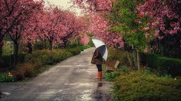

A fun fact about spring is that baby birds learn how to sing in the spring. After a long winter outside becomes lively agian. Flowers and tree start to grow and blossom. There is more rain in spring than any other season. Along with the rain and melting snow flooding ussaly happens.
Every spring kids that are in school get "spring break". In the colder climate people ussaly travel to warm places such as Mexico, florida and Hawaii. I love spring because it shows signs of summer coming. With little signs of green, pink, purple and yellow coming out.
